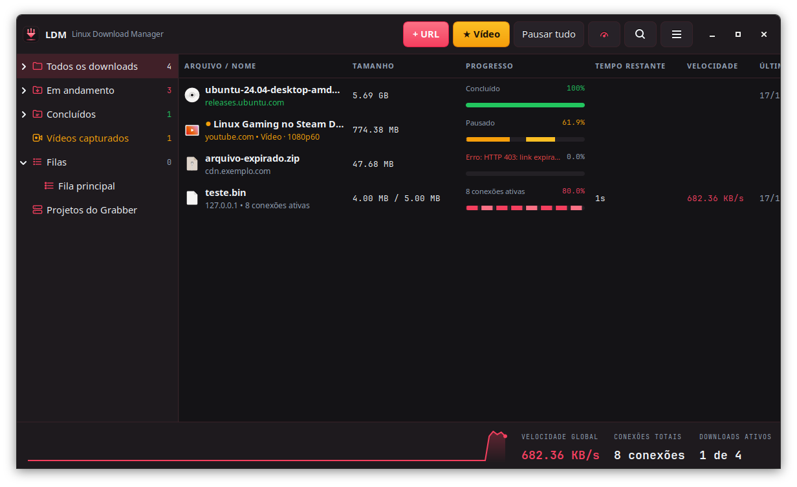
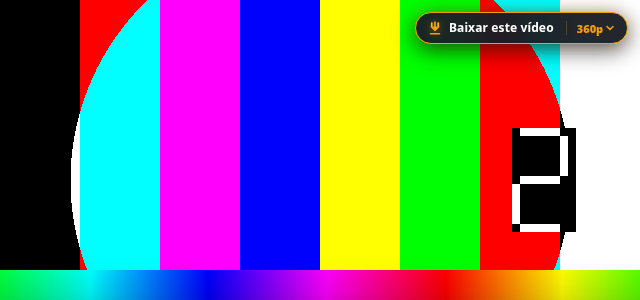
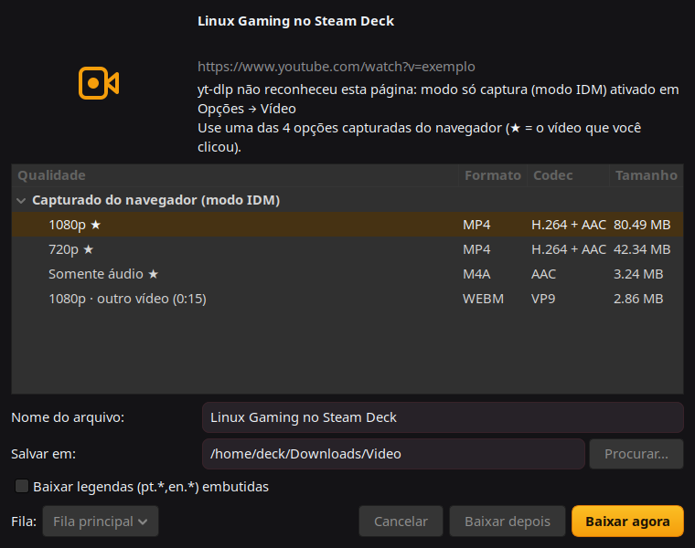

The free IDM alternative for Linux, Steam Deck and Windows
Linux Download Manager speeds up downloads with multiple connections, resumes interrupted files and downloads videos from any website with one button on top of the player. Free and open source (MIT).

Features
Download accelerator
Multiple connections with dynamic segmentation, like IDM. Resume after a network drop or a reboot. HTTP, HTTPS and FTP.
Video downloader
A "Download this video" button on any player. YouTube and about 1,800 sites through yt-dlp, plus HLS/DASH capture, quality choice, MP3 and playlists.
Browser integration
Chrome, Edge, Brave and Firefox extension. Large files go to LDM automatically; Alt+click lets the browser handle it.
Queues and scheduler
Categories, queues, scheduled start and stop, speed limiter, shut down when done, IDM list import.
Steam Deck ready
A single AppImage that runs on SteamOS in desktop mode, with Flatpak browsers supported.
Also on Windows
As "Lunix Download Manager": installer without admin rights, or a portable zip.
Install
| Linux / Steam Deck | Download the .AppImage, run chmod +x on it and open it. Needs glibc 2.38+ (SteamOS, Ubuntu 24.04+, Mint 22+, Fedora 39+, Debian 13, Arch). |
|---|---|
| Windows 10/11 | Run Lunix_Download_Manager-Setup.exe. On SmartScreen, click More info → Run anyway. |
| Browser extension | Open chrome://extensions, turn on Developer mode, click Load unpacked and pick the folder shown in LDM under ☰ → Help → Browser extension. Full guide. |


Em português
Linux Download Manager é um gerenciador e acelerador de downloads gratuito, uma alternativa ao IDM (Internet Download Manager) para Linux, Steam Deck e Windows. Baixa com várias conexões, retoma downloads interrompidos e baixa vídeos de qualquer site com um botão sobre o player.
- Baixe a AppImage (Linux) ou o instalador (Windows) na página de releases.
- Instale a extensão do navegador: o programa mostra o passo a passo ao abrir. Tutorial.
- Arquivos a partir de 50 MB e vídeos vão direto para o LDM.